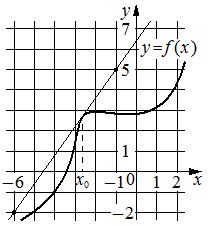

Авторский разбор и аудит предварительны; внешней экспертизы нет.
Модель автора: claude-opus-5-5 (opus; effort=low); в основных частотах: True ·
Впишите правильный ответ.
На рисунке изображены график функции и касательная к нему
в точке с абсциссой . Найдите значение производной функции
в точке .

КЭС: 4.2 Применение производной к исследованию функций на монотонность и экстремумы. Нахождение наибольшего и наименьшего значения функции на отрезке
1,4
| ID / вход | Действие | Результат | Локальные KC |
|---|---|---|---|
| s1 · condition | Определить по рисунку две точки касательной с целочисленными координатами на сетке | Касательная проходит через точки (-6; -2) и (-1; 5) | kc1 |
| s2 · s1 | Вычислить угловой коэффициент касательной по двум точкам и отождествить его со значением производной в точке касания | k = (5-(-2))/(-1-(-6)) = 7/5 = 1,4; f'(x0) = k = 1,4 | kc2, kc3 |
[
{
"id": "m1",
"name": "Производная через угловой коэффициент касательной по графику",
"step_ids": [
"s1",
"s2"
]
}
]По изображению прямой на координатной сетке выбрать точки, лежащие на прямой в узлах сетки, и записать их координаты; применимо, когда такие узлы различимы на рисунке.
{
"local_kc_id": "kc1",
"status": "uncertain",
"catalog_kc_id": null,
"evidence": [
{
"ref": "step:s1:action",
"quote": "Определить по рисунку две точки касательной с целочисленными координатами на сетке"
},
{
"ref": "step:s1:result",
"quote": "Касательная проходит через точки (-6; -2) и (-1; 5)"
},
{
"ref": "image:assets/b59265763b0887452c0152ea.png",
"region_description": "Прямая-касательная от левого нижнего угла сетки (около x=-6, y=-2) вверх вправо через узлы сетки к верхнему краю левее оси y; подписи осей -6, -1, 0, 1, 2, -2, 1, 5, 7"
}
],
"context_refs": [
"condition",
"image:assets/b59265763b0887452c0152ea.png"
],
"alternatives_checked": [
{
"catalog_kc_id": "graph_coordinates",
"reason": "Определение покрывает считывание отмеченных точек и пересечений с осями по масштабу; здесь точки не отмечены, а выбираются как узлы сетки на прямой. Близко, но граница определения не включает выбор неотмеченных узлов явно."
}
],
"rationale": "Операция — считывание координат по масштабу сетки, объект — неотмеченные узлы, через которые проходит изображённая прямая. Это близко к graph_coordinates, но условие отмеченности точки не выполнено; неясно, расширять ли узел или выделять отдельный. По рисунку прочтение (-6;-2) и (-1;5) правдоподобно и согласуется с наклоном.",
"proposal": null,
"blocking": false,
"issue_ids": []
}По координатам двух различных точек невертикальной прямой найти k как отношение приращения ординаты к приращению абсциссы.
{
"local_kc_id": "kc2",
"status": "new_candidate",
"catalog_kc_id": null,
"evidence": [
{
"ref": "step:s2:result",
"quote": "k = (5-(-2))/(-1-(-6)) = 7/5 = 1,4"
}
],
"context_refs": [
"step:s1:result"
],
"alternatives_checked": [
{
"catalog_kc_id": "literal_f253b50b98a1",
"reason": "Требует найти оба коэффициента y=kx+b; здесь найден только k, b не вычисляется — это компонент, не полное действие."
},
{
"catalog_kc_id": "direct_proportion",
"reason": "Касается y=kx по одной точке, а не приращений по двум точкам."
}
],
"rationale": "Наблюдаемое действие — отношение приращений Δy/Δx по двум точкам невертикальной прямой. Полного соответствия в каталоге нет: ближайший узел шире (включает b).",
"proposal": {
"name": "Вычислять угловой коэффициент прямой по двум точкам",
"definition": "По двум точкам невертикальной прямой с разными абсциссами найти k=(y2-y1)/(x2-x1); нахождение свободного члена не входит."
},
"blocking": false,
"issue_ids": []
}Значение производной функции в точке касания приравнять к угловому коэффициенту касательной к графику в этой точке; требует, чтобы касательная была невертикальной.
{
"local_kc_id": "kc3",
"status": "new_candidate",
"catalog_kc_id": null,
"evidence": [
{
"ref": "step:s2:action",
"quote": "отождествить его со значением производной в точке касания"
},
{
"ref": "step:s2:result",
"quote": "f'(x0) = k = 1,4"
}
],
"context_refs": [
"condition"
],
"alternatives_checked": [
{
"catalog_kc_id": "literal_9aee0783618d",
"reason": "Считывание знака производной по графику производной, а не значение по касательной."
},
{
"catalog_kc_id": "stationary_point",
"reason": "Касается нулей производной, не связи с наклоном касательной."
}
],
"rationale": "Действие — использовать равенство f'(x0) угловому коэффициенту касательной в точке x0. Узлов о геометрическом смысле производной в каталоге нет.",
"proposal": {
"name": "Применять геометрический смысл производной",
"definition": "Значение производной функции в точке касания приравнять к угловому коэффициенту невертикальной касательной к графику в этой точке."
},
"blocking": false,
"issue_ids": []
}[ "Координаты точек считаны с растрового рисунка по узлам сетки; масштаб определён по подписям осей." ]
[]
{
"author_path": "data/annotation/runs/2026-11-09-fipi-team-bogdan108-next-100/raw/author/FEE4C3.json",
"auditor_path": "data/annotation/runs/2026-11-09-fipi-team-bogdan108-next-100/raw/auditor/FEE4C3.json",
"accepted_after_review": null
}